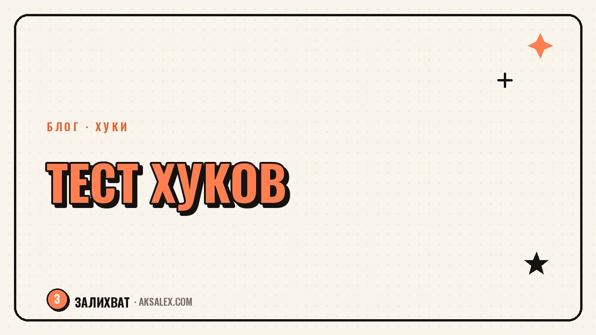

Как тестировать хуки и находить рабочие

Хук решает, досмотрят твой ролик или пролистнут в первую секунду. Но угадать сильный хук с ходу невозможно - то, что кажется цепким тебе, может не сработать на аудитории. Поэтому хуки не придумывают, а тестируют: снимаешь варианты, смотришь удержание и оставляешь рабочее. Разберём, что именно мерить, как поставить честный тест и как по цифрам находить хуки, которые держат внимание.
Почему хук нельзя угадать
Интуиция автора и реакция зрителя часто расходятся. Ты знаешь контекст, тебе понятна ценность ролика, а зритель видит только первую секунду и решает мгновенно. Поэтому хук, который тебе кажется гениальным, может проваливаться, а невзрачный - неожиданно выстреливать.
Единственный честный судья - удержание первых секунд. Оно показывает, сколько людей осталось после хука, а сколько ушло. Это не мнение, а поведение живой аудитории, и именно на него стоит опираться, а не на догадки.
Хук не оценивают на вкус. Его проверяют цифрой: сколько людей осталось после первой секунды.
Какую метрику смотреть
Главный показатель - удержание в первые три секунды. Если из ста зрителей после хука осталось восемьдесят, хук сильный. Если сорок - слабый, люди уходят до сути. В статистике это видно по графику удержания: крутой обрыв в самом начале означает провальный хук.
На что смотреть в графике удержания
- Обрыв на первой-второй секунде - хук не зацепил.
- Плавное снижение после хорошего старта - хук сработал, дело в теле ролика.
- Высокое удержание первых секунд - хук можно повторять на других темах.
- Рост в середине - там что-то интересное, стоит вынести в хук.
Не путай удержание с общими просмотрами. Ролик может набрать много показов и при этом иметь провальный хук - алгоритм показал его широко, но люди отваливались сразу. Смотри именно на долю оставшихся, а не на абсолютные цифры.
Как поставить честный тест
Чтобы сравнение было честным, меняй только одно - хук, а остальное оставляй прежним. Сними один и тот же ролик с тремя-пятью разными первыми фразами или кадрами и выложи их с интервалом. Тогда разница в удержании покажет именно силу хука, а не темы или времени.
| Элемент | В тесте | Почему |
|---|---|---|
| Хук | Меняем | Это то, что проверяем |
| Тема ролика | Оставляем | Иначе непонятно, что сработало |
| Тело и финал | Оставляем | Разница должна быть только в начале |
| Время выхода | Схожее | Чтобы не мешал разный трафик |
Не нужно тестировать всё сразу. Возьми одну тему, сделай под неё несколько хуков и найди победителя. Потом эту рабочую формулу переноси на другие темы - так копится банк проверенных хуков.
От теста к банку рабочих хуков
Каждый тест даёт тебе не только победителя в моменте, но и понимание, какой тип хука заходит твоей аудитории. Записывай результаты: какой хук, какое удержание, на какой теме. Через месяц у тебя будет список формул, которые стабильно работают именно у тебя.
- Веди табличку: хук, тип, тема, удержание первых секунд.
- Отмечай победителей и повторяй их формулы на новых темах.
- Отсеивай типы хуков, которые стабильно проваливаются.
- Раз в месяц пересматривай банк и обновляй список рабочих.
Так ты перестаёшь начинать каждый ролик с нуля. У тебя есть проверенные заготовки, и остаётся подставить тему. Это и есть переход от угадывания к системе, которая опирается на твои же цифры.
Частые ошибки в тестировании хуков
Первая - менять сразу всё: хук, тему, оформление. Тогда непонятно, что именно сработало. Меняй по одному. Вторая - делать вывод по одному ролику: единичный результат может быть случайностью, нужна хотя бы небольшая серия.
Третья ошибка - смотреть на лайки вместо удержания. Лайки ставят те, кто досмотрел, а хук работает раньше - на тех, кто ещё решает, остаться или уйти. Четвёртая - бросать тест на полпути и возвращаться к любимому хуку без данных. Доверяй цифрам, а не привычке.
Частые вопросы
По какой метрике оценивать хук?
По удержанию первых трёх секунд. Оно показывает долю зрителей, оставшихся после хука. Резкий обрыв графика в начале означает, что хук не зацепил и его пора менять.
Сколько вариантов хука тестировать?
Три-пять на одну тему. Меняй только первую фразу или кадр, а остальное оставляй прежним - тогда разница в удержании покажет силу именно хука, а не темы.
Можно ли судить о хуке по одному ролику?
Нет, единичный результат бывает случайным. Нужна хотя бы небольшая серия и повторяемость. Один провал или успех - это ещё не закономерность, на которую стоит опираться.
Почему нельзя оценивать хук по лайкам?
Лайки ставят те, кто уже досмотрел, а хук работает раньше - на тех, кто решает, остаться или уйти. Лайки говорят о ролике целиком, а не о силе первой секунды.
Что делать с хуком, который сработал?
Запиши его формулу и перенеси на другие темы. Так копится банк проверенных хуков, и каждый новый ролик ты начинаешь не с нуля, а с рабочей заготовки.
Раз тема оказалась полезной, вот что почитать следующим. Разбираем нейросети для фоновой музыки, озвучки и чистки звука в видео для блога.
Читать статью →а не вручную